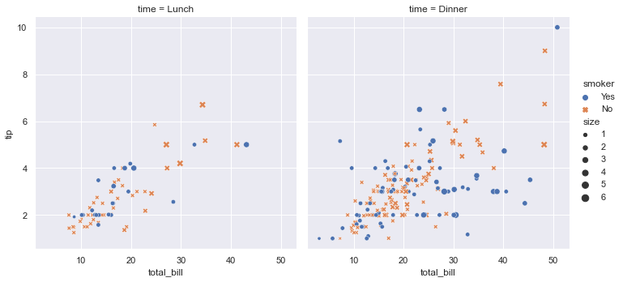
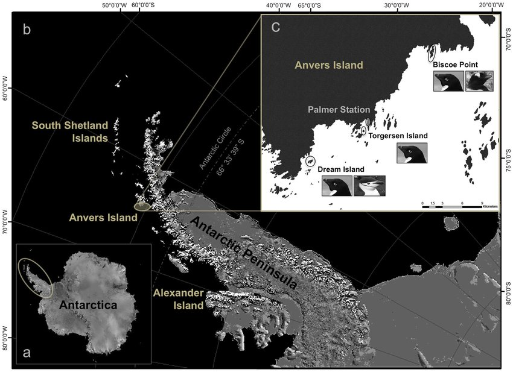
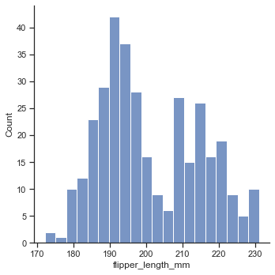
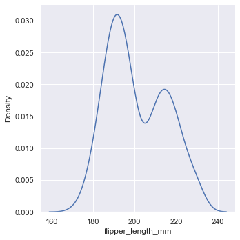
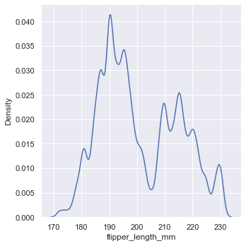
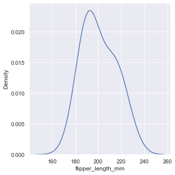
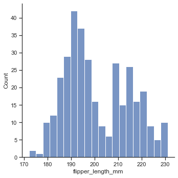
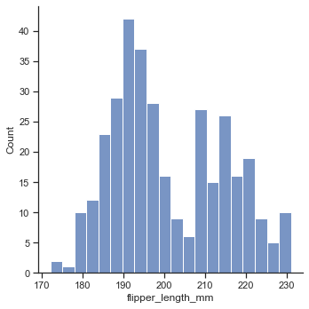
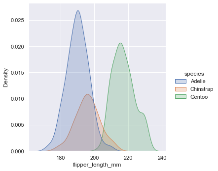
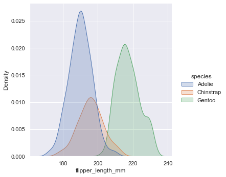

# default theme 적용하기sns.set_theme()# Create a visualizationsns.relplot(data=tips,x="total_bill",y="tip",col="time",hue="smoker",style="smoker",size="size",)
<seaborn.axisgrid.FacetGrid at 0x27c22233580>

#%%##################################################### 6-1-2 ############################################################ Data structures accepted by seaborn## Long-form data"""Each variable is a column""""""Each observation is a row"""flights=sns.load_dataset("flights")flights.head()
importseabornassnsimportmatplotlib.pyplotaspltfig,ax=plt.subplots(2)xdata=np.arange(50)sns.set(style="ticks")tips=sns.load_dataset("tips")g1=sns.relplot(x="total_bill",y="tip",hue="day",data=tips,ax=ax[0])g2=sns.relplot(x="total_bill",y="tip",hue="day",data=tips,ax=ax[1])# Now you can add any curves to individual axis objects ax[0].plot(xdata,xdata/5)# You will have to close the additional empty figures returned by replotplt.close(g1.fig)plt.close(g2.fig)plt.tight_layout()
c:\Users\User\anaconda3\envs\tf2\lib\site-packages\seaborn\relational.py:858: UserWarning: relplot is a figure-level function and does not accept the `ax` parameter. You may wish to try scatterplot
warnings.warn(msg, UserWarning)
c:\Users\User\anaconda3\envs\tf2\lib\site-packages\seaborn\relational.py:858: UserWarning: relplot is a figure-level function and does not accept the `ax` parameter. You may wish to try scatterplot
warnings.warn(msg, UserWarning)
species a factor denoting penguin species (Adélie, Chinstrap and Gentoo)
Fig: Adélie(좌), Chinstrap(중), Gentoo(우)
island a factor denoting island in Palmer Archipelago, Antarctica (Biscoe, Dream or Torgersen)

Fig: 남극지역 (
출처: Gorman, Kristen B., Tony D. Williams, and William R. Fraser. "Ecological sexual dimorphism and environmental variability within a community of Antarctic penguins (genus Pygoscelis)." PloS one 9.3 (2014): e90081)
bill_length_mm a number denoting bill length (millimeters)
bill_depth_mm a number denoting bill depth (millimeters)
df_col=penguins.columnsforiindf_col:v=np.sum(penguins[i].isna())ifv>0:print("NaN is included in {}: #{}".format(i,v))
NaN is included in bill_length_mm: #2
NaN is included in bill_depth_mm: #2
NaN is included in flipper_length_mm: #2
NaN is included in body_mass_g: #2
NaN is included in sex: #11
---------------------------------------------------------------------------NameErrorTraceback (most recent call last)
c:\Users\jjjeo\Documents\GitHub\visualization\chapters\06\image_obj.ipynb Cell 58 in <cell line: 2>()<ahref='vscode-notebook-cell:/c%3A/Users/jjjeo/Documents/GitHub/visualization/chapters/06/image_obj.ipynb#Y111sZmlsZQ%3D%3D?line=0'>1</a>## Categorical estimate plots----><ahref='vscode-notebook-cell:/c%3A/Users/jjjeo/Documents/GitHub/visualization/chapters/06/image_obj.ipynb#Y111sZmlsZQ%3D%3D?line=1'>2</a>titanic=sns.load_dataset("titanic")<ahref='vscode-notebook-cell:/c%3A/Users/jjjeo/Documents/GitHub/visualization/chapters/06/image_obj.ipynb#Y111sZmlsZQ%3D%3D?line=2'>3</a>titanic.head()NameError: name 'sns' is not defined
#%%##################################################### 6-2-3 ############################################################ Visualizing distribution of data## hisplotpenguins=sns.load_dataset("penguins")# Plotting univariate histogramssns.displot(penguins,x="flipper_length_mm")
<seaborn.axisgrid.FacetGrid at 0x27c14b29100>
# Choosing the bin sizesns.displot(penguins,x="flipper_length_mm",binwidth=3)sns.displot(penguins,x="flipper_length_mm",bins=20)
<seaborn.axisgrid.FacetGrid at 0x27c14bbb040>

# Conditioning on other variablessns.displot(penguins,x="flipper_length_mm",hue="species")sns.displot(penguins,x="flipper_length_mm",hue="species",element="step")sns.displot(penguins,x="flipper_length_mm",hue="species",multiple="stack")
## Kernel density estimationsns.displot(penguins,x="flipper_length_mm",kind="kde")
<seaborn.axisgrid.FacetGrid at 0x27c18bdf940>

# Choosing the smoothing bandwidthsns.displot(penguins,x="flipper_length_mm",kind="kde",bw_adjust=.25)sns.displot(penguins,x="flipper_length_mm",kind="kde",bw_adjust=2)
<seaborn.axisgrid.FacetGrid at 0x27c18c699a0>


# Conditioning on other variablessns.displot(penguins,x="flipper_length_mm",hue="species",kind="kde")sns.displot(penguins,x="flipper_length_mm",hue="species",kind="kde",multiple="stack")sns.displot(penguins,x="flipper_length_mm",hue="species",kind="kde",fill=True)


 

 
